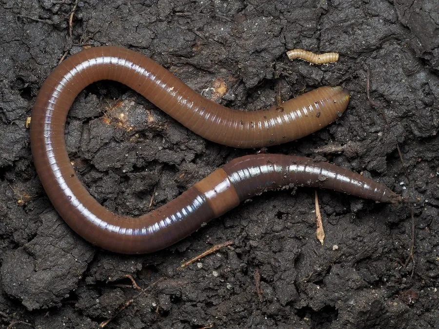

其他无脊椎动物 · 动物界
威廉环毛蚓 Metaphire guillelmi

体长十五至二十厘米的大型蚯蚓，环带明显、刚毛环生，栖居于农田与菜园的土壤中，能改良土壤，雨后常爬出地面。
- 分类
- 门环节动物门纲寡毛纲目后孔寡毛目科巨蚓科属环毛蚓属
- 栖息环境
- 农田、菜园、果园和庭院的湿润壤土中，穴居深达数十厘米
- 地理分布
- 中国华北、华东和华中的农田与园地土壤
- 保护级别
- 尚无保护级别；农药使用与过量捕捉会影响其种群
物种志
威廉环毛蚓的体长十五至二十厘米，体呈圆柱形，由一百多个体节组成，体色灰褐至红褐，背部颜色较深，腹部较浅。它的环带位于第十四至十六节，呈肿胀的环状，颜色较浅，性成熟时格外明显。除第一节和最后几节外，每个体节上都环生一圈细小的刚毛，刚毛是它钻土时的支点，环毛蚓之名由此而来。
它分布于中国华北、华东和华中的农田、菜园、果园和庭院土壤中，喜欢湿润、富含有机质的壤土，穴居深度可达数十厘米，白天在洞中活动，夜间爬到地表取食腐叶和有机碎屑，把泥土吞入消化道，吸收其中的有机质后排出团粒状的蚓粪，能显著改善土壤的通气性和肥力。它雌雄同体，异体交配，卵产于卵茧中。雨前气压降低、土壤缺氧时，它会爬出地面，因此常被误认为下雨招来了蚯蚓。它尚无保护级别，是重要的土壤动物，也被用作钓饵和中药材，过量捕捉和农药使用会影响其种群。
形态与习性
- 体长十五至二十厘米，圆柱形
- 环带位于第十四至十六节，肿胀呈环状
- 刚毛除首末几节外每节环生一圈
- 栖息农田、菜园与庭院的湿润壤土，穴居数十厘米
- 食性吞食泥土与腐叶，排出团粒状蚓粪
- 繁殖雌雄同体，异体交配，卵产于卵茧
趣味知识
- 它每节都长一圈刚毛，钻土时靠这些短毛抓住洞壁。
- 它排出的蚓粪是团粒状的，能让板结的土变得松软。
- 下雨前它爬出地面，不是因为喜欢水，而是土里缺氧。